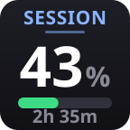
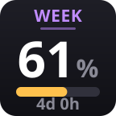
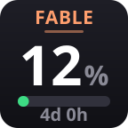
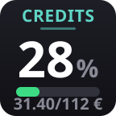
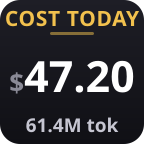

Stop opening a terminal to run /usage. Session window, weekly
limit, Fable window, usage credits, and what today's tokens would have cost
— glanceable, one refresh a minute.





Rendered by the plugin. Values above are synthetic.
The rolling 5-hour window, with the time left until it resets.
The weekly limit across all models, and when the week rolls over.
The model-scoped weekly window, so the premium budget has its own dial.
Usage-credit spend against the monthly cap, in your own currency.
What today's tokens would have cost at API list price — a proxy for how hard the day has been, not an invoice.
Green under 50%, amber under 75%, orange under 90%, red above. You read the bar before you read the number.
One call a minute to Anthropic's usage endpoint, authenticated with the token Claude Code already stores. No separate login, no API key to paste. Expired tokens are refreshed and written back so both stay in sync.
Never touches the network. It reads your local Claude Code transcripts, counts today's tokens per model, and prices them — including the separate rates for cache writes and reads.
git clone https://github.com/karolpolikarp/claude-limits-streamdeck.git
cd claude-limits-streamdeck
npm install --prefix com.karolp.claudelimits.sdPlugin
# Windows — copies the plugin and restarts Stream Deck
.\deploy.ps1Then drag the keys from the Claude category onto your deck. Needs Stream Deck 6.5+ (it runs on the Node runtime the app ships with) and Claude Code logged in. macOS install is a folder copy — see the readme.